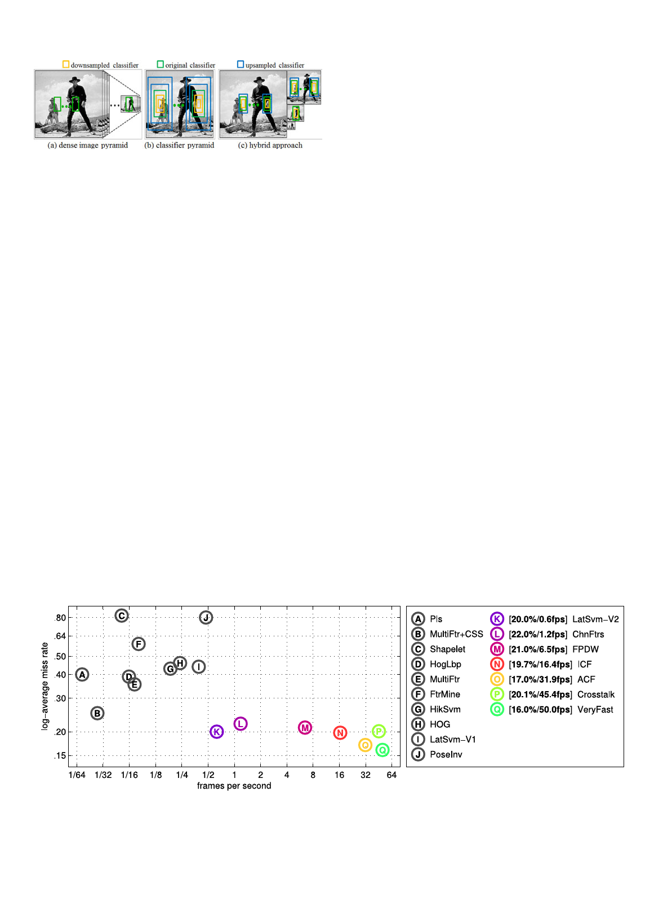

DOLLA�R ET AL.: FAST FEATURE PYRAMIDS FOR OBJECT DETECTION
1541
Fig. 9. (a) A standard pipeline for performing multiscale detection is to
create a densely sampled feature pyramid. (b) Viola and Jones [27]
used simple shift and scale invariant features, allowing a detector to be
placed at any location and scale without relying on a feature pyramid. (c)
ICF can use a hybrid approach of constructing an octave-spaced feature
pyramid followed by approximating detector responses within half an
octave of each pyramid level.
using the exact feature pyramid. Even approximating 15 of
every 16 scales increases MR only somewhat. Constructing
the channels without correcting for power law scaling, or
using an incorrect value of �, results in markedly decreased
performance, see Fig. 11b. Finally, we observe that at least
eight scales per octave must be used for good performance
(Fig. 11c), making the proposed scheme crucial for achiev-
ing detection results that are both fast and accurate.
6.2 Integral Channel Features
Integral channel features [29] are a precursor to the ACF
framework described in Section 6.1. Both ACF and ICF
use the same channel features and boosted classifiers;
the key difference between the two frameworks is that
ACF uses pixel lookups in aggregated channels as fea-
tures while ICF uses sums over rectangular channel
regions (computed efficiently with integral images).
Accuracy of ICF with exact and fast feature pyramids is
shown in Table 1. ICF achieves state-of-the-art results: infe-
rior to ACF but otherwise outperforming most competing
approaches. The MR of ICF averaged over the four data sets
is 42 percent with exact feature pyramids and 45 percent
with fast feature pyramids. The gap of 3 percent is larger
than the 1 percent gap for ACF but still small. With fast fea-
ture pyramids ICF runs at $16 fps, see Fig. 10. ICF is slower
than ACF due to construction of integral images and more
expensive features (rectangular sums computed via integral
images versus single pixel lookups). For more details on
ICF, see [29], [39]. The variant tested here uses identical
channels to ACF.
Detection performance with fast feature pyramids under
varying settings is shown in Fig. 12. The plots mirror the
results shown in Fig. 11 for ACF. The key result is given in
Fig. 12a: when approximating seven of eight scales per
octave, the MR for ICF is 2 percent worse than the MR
obtained with exact feature pyramids.
The ICF framework allows for an alternate application
of the power law governing feature scaling: instead of
rescaling channels as discussed in Section 5, one can
instead rescale the detector. Using the notation from
Section 4, rectangular channel sums (features used in ICF)
can be written as AfVðIÞ, where A denotes rectangle area.
As such, Eq. (4) can be applied to approximate features at
nearby scales and given integral channel images computed
at one scale, detector responses can be approximated at
nearby scales. This operation can be implemented by
rescaling the detector itself, see [39]. As the approximation
degrades with increasing scale offsets, a hybrid approach
is to construct an octave-spaced feature pyramid followed
by approximating detector responses at nearby scales, see
Fig. 9. This approach was extended in [30].
6.3 Deformable Part Models
Deformable part models from Felzenszwalb et al. [35] are an
elegant approach for general object detection that have con-
sistently achieved top results on the PASCAL VOC chal-
lenge [38]. DPMs use a variant of HOG features [21] as their
image representation, followed by classification with linear
SVMs. An object model is composed of multiple parts, a
root model, and optionally multiple mixture components.
For details see [35].
Recent approaches for increasing the speed of DPMs
include work by Felzenszwalb et al. [44] and Pedersoli
et al. [45] on cascaded and coarse-to-fine deformable part
Fig. 10. Log-average miss rate on the INRIA pedestrian data set [21] versus frame rate on 640 Â 480 images for multiple detectors. Method runtimes
were obtained from [31], see also [31] for citations for detectors A-L. Numbers in brackets indicate MR/fps for select approaches, sorted by speed.
All detectors that run at 5 fps and higher are based on our fast feature pyramids; these methods are also the most accurate. They include: (M)
FPDW [39] which is our original implementation of ICF, (N) ICF [Section 6.2], (O) ACF [Section 6.1], (P) crosstalk cascades [40], and (Q) the Very-
Fast detector from Benenson et al. [30]. Both (P) and (Q) use the power law governing feature scaling described in this work; the additional speedups
in (P) and (Q) are based on improved cascade strategies, multi-resolution models and a GPU implementation, and are orthogonal to the gains
achieved by using approximate multiscale features.